The Creative Tools module offers four parametric design cases that allow users to create custom models by adjusting various parameters.
3.1 Letter Arrangement
Users can input the desired letters, numbers, or simple shapes and adjust their size, rotation, and spacing.
Single & Multiple Input
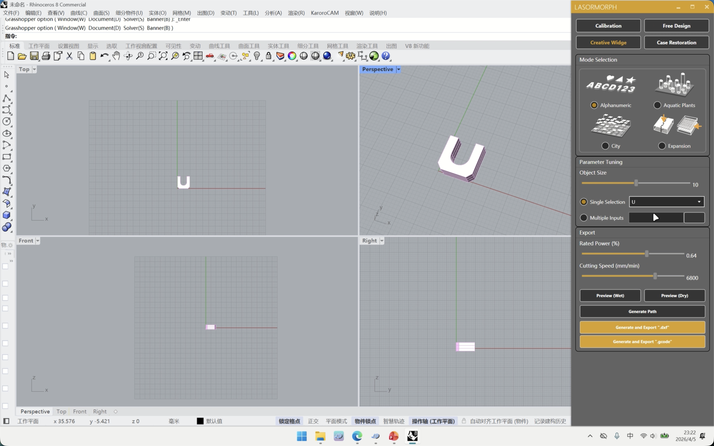
Single Select Mode
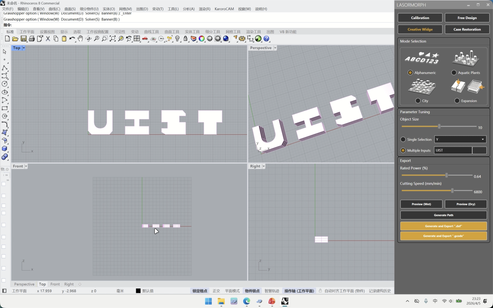
Multiple Input Mode
Generate Path & Export
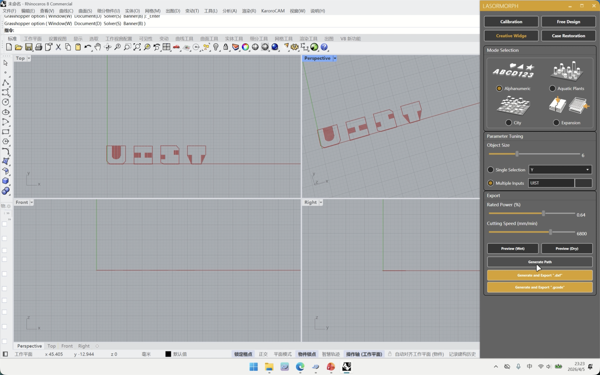
Generate Cutting Path
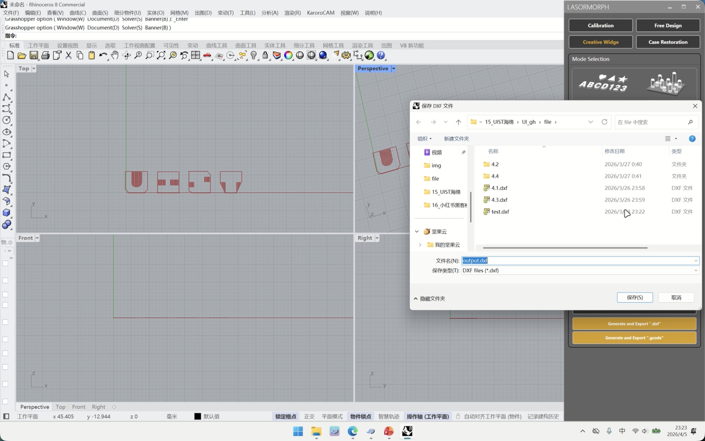
Export as DXF
3.2 Seaweed
Adjust the number of seaweed strands in the X and Y directions, height, overall size, and other parameters.
Parameter Tuning
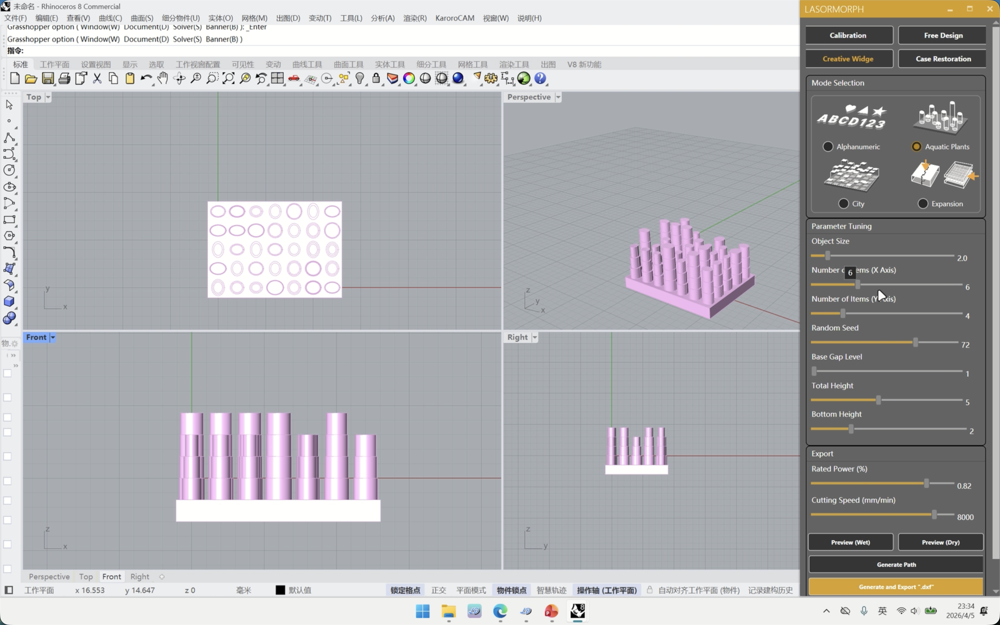
Rate Power & Cutting Speed
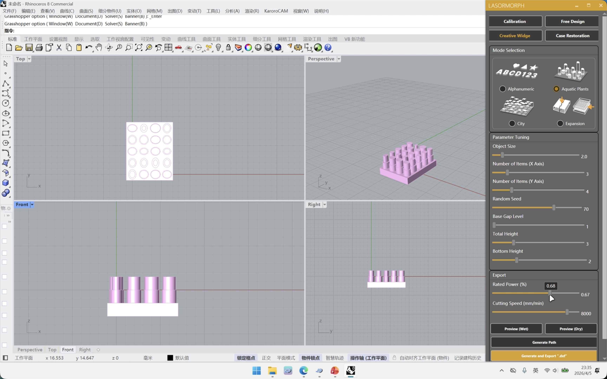
Generate Path
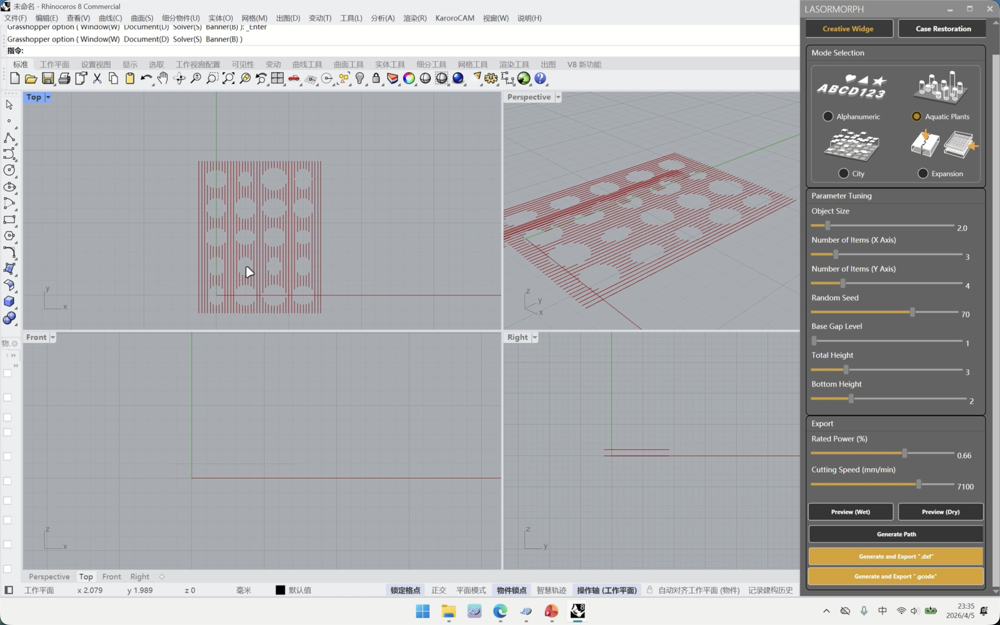
3.3 City
Import a curve from a file, then define the maximum and minimum heights of city elements.
Parameter Tuning
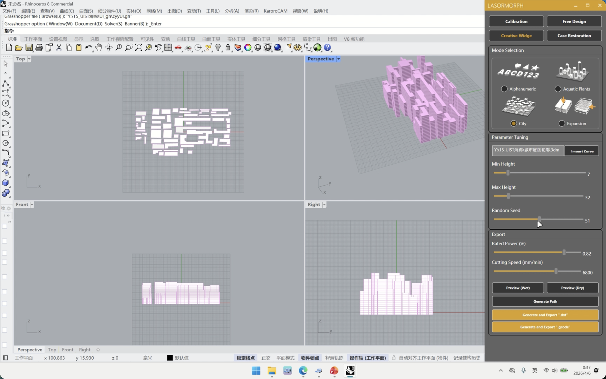
3.4 Expansion Module
Customize the zigzag pattern for horizontal expansion and adjust parameters for vertical expansion.
Expression Mode & Position
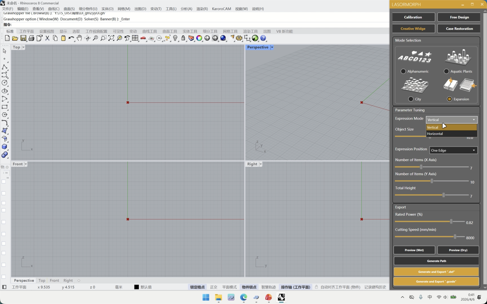
Expression Mode
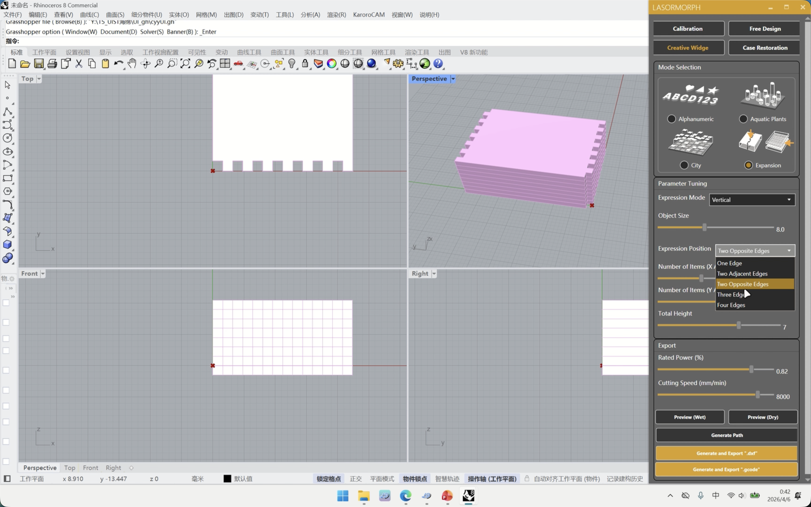
Expression Position
Parameter Tuning
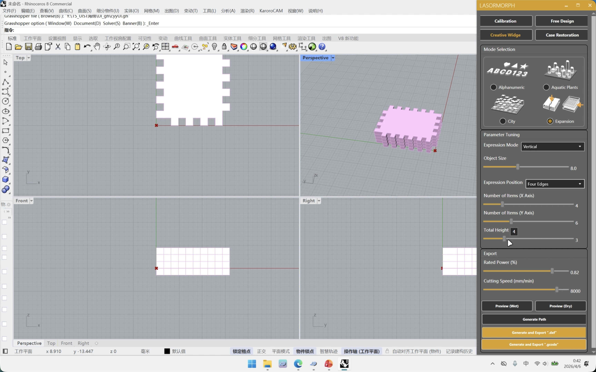
Parameter Settings 1
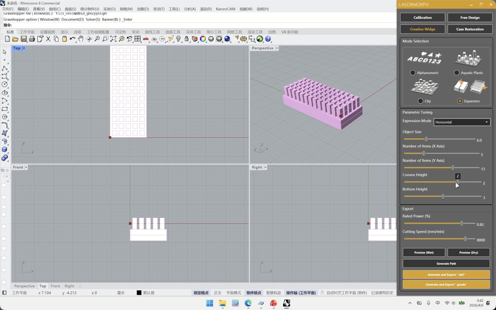
Parameter Settings 2
Generate Path & Export
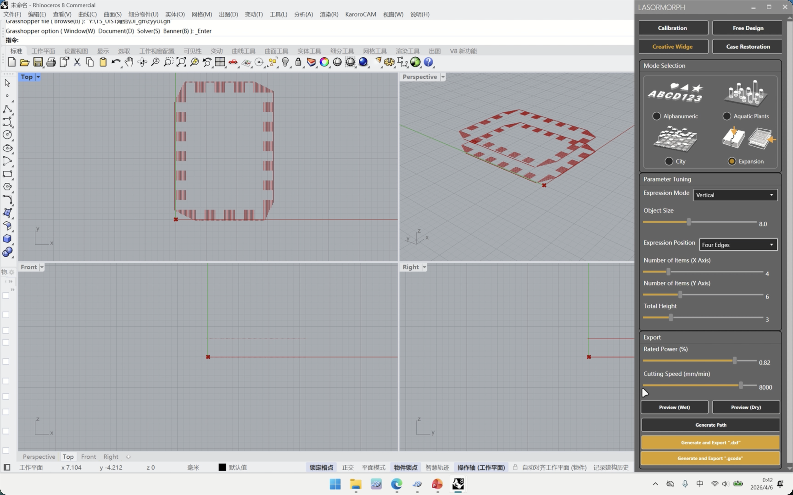
Generate Cutting Path
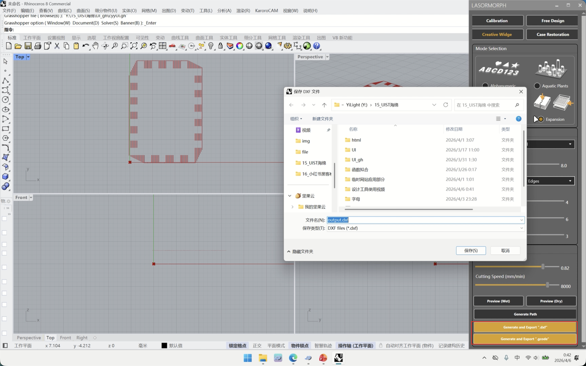
Export Options